2차시 실습
2차시 실습오늘의 지도식당 비유 그대로 — 내 식당에 주방을 차리고, 재료를 받고, 셰프를 모시고, 간판을 겁니다
앱스 스크립트로 내 서버를 — 칭찬이 시트에 쌓여요
나이스 급식 · 날씨 데이터를 주소 한 줄로
제미나이 API 키 하나로 AI가 즉석 요리
깃허브로 우리 반 앱 진열장 주소 만들기
| 시간 | 활동 | 결과물 |
|---|---|---|
| 14:30 | 복습 — 서랍 6개, 3일 안에 다시 열기 · 오늘의 지도 | 내 서랍 확인 |
| 14:40 | 실습 1 ④ 템플릿 사본 → 앱스 스크립트 배포 → 칭찬 보내기 | 우리 반 도우미 웹 앱 주소 |
| 15:05 | 실습 2 ⑤ 급식 탭 · JSON 구경 · 키 없는 날씨 앱 | 오늘 급식 화면 |
| 15:20 | 실습 3 ⑥ AI 스튜디오 키 → [설정] 탭 → AI 영양사 | AI 급식 안내 |
| 15:35 | 실습 4 ⑦ 깃허브 저장소 → 파일 올리기 → Pages → 내 앱 진열 | https://내아이디.github.io/myclass-apps/ |
| 16:10 | 패들렛 갤러리에 내 진열장 주소 올리기 · 마무리 | 서로의 진열장 구경 |
시작 전에 세 가지5분이면 끝 — 미리 해 두면 실습이 훨씬 편해요
크롬에서 개인 구글 계정으로 로그인
앱스 스크립트와 AI 스튜디오는 개인 gmail 계정이 가장 잘 됩니다. 학교·교육청 계정은 관리자 설정 때문에 배포나 API 키 발급이 막힐 수 있어요.
깃허브(GitHub) 가입
- 이메일 → 비밀번호 → Username(사용자 이름) → 이메일로 온 숫자 코드 입력
- Username은 내 사이트 주소가 돼요:
https://username.github.io/…→ 짧은 영어 소문자 추천 (예:kimteacher26) - 가입 뒤 나오는 설문·요금제 화면은 Skip / Continue for free로 넘어가면 됩니다.
💡 깃허브 화면은 영어예요. 이 페이지는 누를 버튼 이름을 영어 그대로 적어 두었으니 같은 글자를 찾아 누르면 됩니다.
(있으면) 1차시에 받은 HTML 파일 찾아 두기
제미나이 캔버스 → 내보내기 → 코드 다운로드로 받은 .html 파일(② HTML 저장형). 실습 4에서 내 진열장에 올립니다. 없어도 괜찮아요 — 키트에 예시 앱이 들어 있어요.
실습 1 · 우리 반 도우미 열기홀(index.html) · 주방(Code.gs) · 냉장고(시트) — 코드는 이미 들어 있어요
구글 시트 하나에 화면과 서버가 함께 붙어 있는 템플릿을 복사해서, 배포 버튼만 눌러 우리 반 웹 앱을 엽니다. 이 앱 하나에 칭찬 게시판(④) · 오늘 급식(⑤) · AI 영양사(⑥)가 모두 들어 있어요.
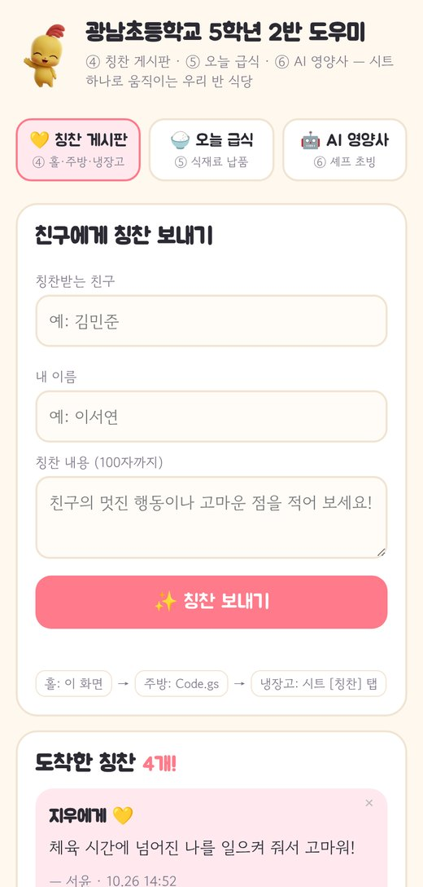
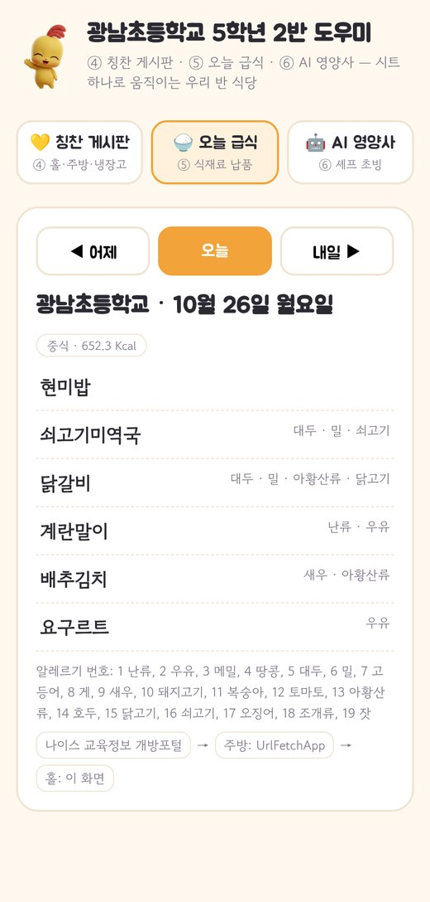
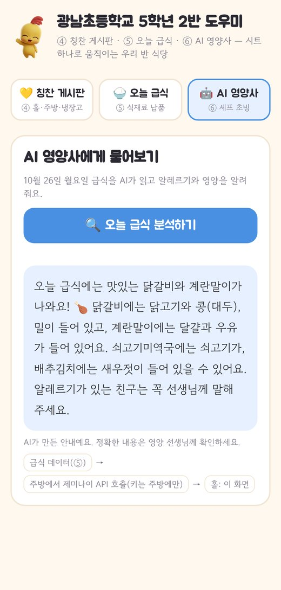
완성하면 이런 화면이 됩니다 (예시 데이터로 만든 미리보기)
템플릿 사본 만들기
노란 띠의 “첨부된 Apps Script 파일 및 기능도 복사됩니다”가 핵심 — 시트만이 아니라 코드까지 내 것이 됩니다. [사본 만들기]를 누르세요.
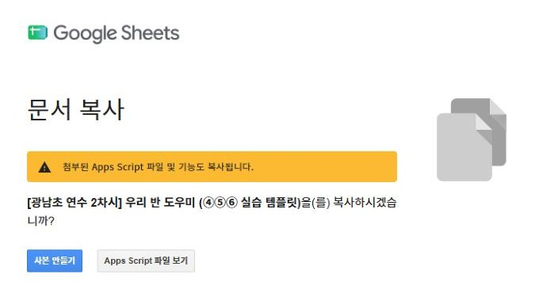
[설정] 탭에서 우리 반 이름 바꾸기
B열 값만 바꿉니다. 학급 이름을 5학년 2반처럼 고쳐 보세요. 광남초는 학교 코드가 이미 들어 있어요. 제미나이 API 키 칸(B6)은 실습 3에서 채웁니다.
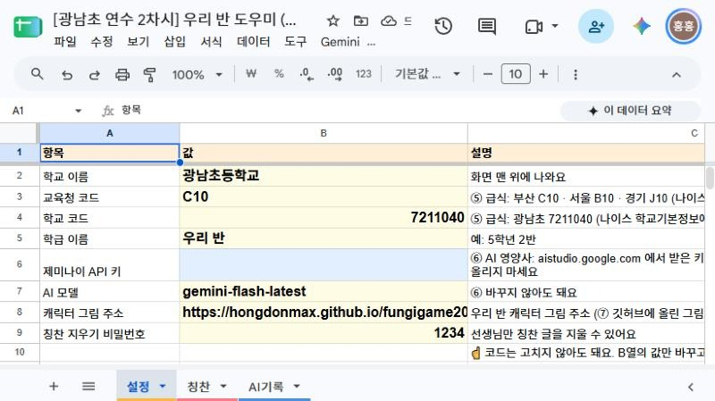
🧊 아래쪽 탭 [칭찬], [AI기록]이 냉장고예요. 앱에서 보낸 글이 여기에 한 줄씩 쌓입니다.
주방 들여다보기 — 확장 프로그램 → Apps Script
확장 프로그램→Apps Script
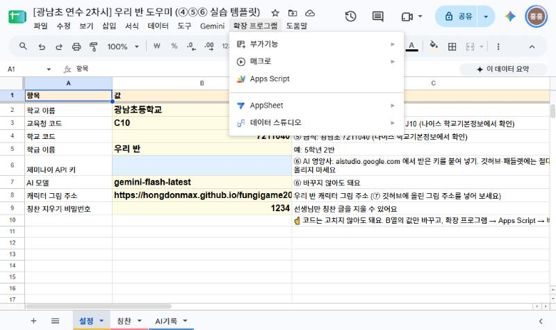
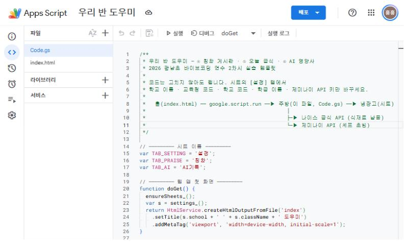
왼쪽에 Code.gs(주방)와 index.html(홀) 두 파일이 보이면 성공. 코드는 고치지 않아도 됩니다.
배포 → 새 배포 → 웹 앱 → 모든 사용자
배포→새 배포→⚙ 유형 선택: 웹 앱→액세스 권한: 모든 사용자→배포
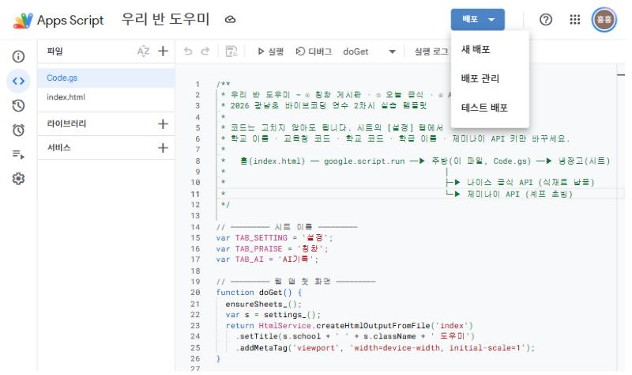
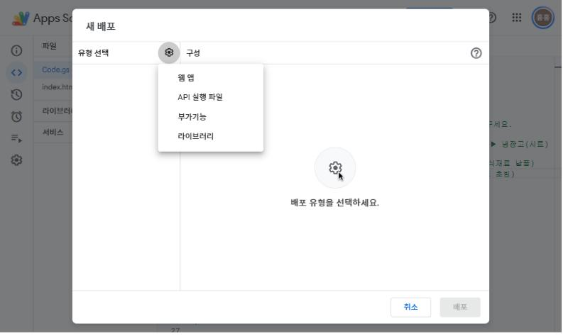
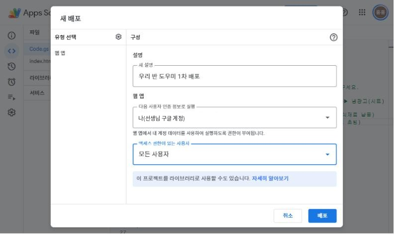
⚠ 액세스를 “나만”으로 두면 학생 기기에서 열리지 않아요. 꼭 모든 사용자.
액세스 승인 — 처음 한 번만 나오는 경고 넘기기
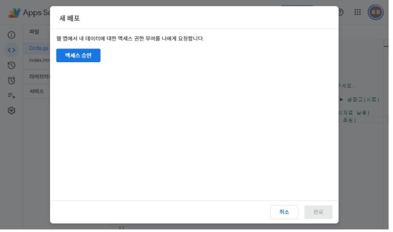
- [액세스 승인] → 새 창에서 내 구글 계정 선택
- “Google에서 확인하지 않은 앱” 화면 → 왼쪽 아래 고급(Advanced)
- 맨 아래 “우리 반 도우미(으)로 이동(안전하지 않음)” 클릭
- 권한 목록 → 모두 선택 후 [허용(Allow)] / [계속]
🙂 “안전하지 않음”은 내가 만든 앱이라 구글이 따로 심사하지 않았다는 뜻이에요. 내 시트를 읽고 쓰고(냉장고), 바깥 주소(나이스·제미나이)에 연결하겠다는 허락입니다.
웹 앱 주소 열고 칭찬 하나 보내기
배포 완료 창의 웹 앱 URL(https://script.google.com/macros/s/…/exec)을 복사 → 새 탭에서 열기 → 칭찬 하나 보내기 → 시트 [칭찬] 탭에 한 줄 생겼는지 확인!
📋 이 주소를 메모장에 꼭 붙여 두세요. 실습 4에서 내 진열장에 걸어 둘 주소예요.
✏️ 나중에 코드를 고쳤다면: 배포 → 배포 관리 → ✏️ → 버전: 새 버전 → 배포 (주소는 그대로). [설정] 탭 값만 바꾼 건 재배포 없이 바로 반영돼요.
더 해 보기 — 프롬프트로 칭찬 게시판을 처음부터 만들기
오늘 템플릿과 같은 구조(홀·주방·냉장고)를 제미나이에게 주문하는 프롬프트예요. 시트 주소 칸만 바꿔서 붙여 넣으세요.
나는 초등학교 교사야. 우리 반 친구들이 서로를 칭찬하는 글을 올리는 "칭찬 게시판" 웹앱을 앱스 스크립트로 만들려고 해. Code.gs와 index.html 코드가 필요해.
[시트]
시트 주소: (여기에 내 스프레드시트 주소 붙여넣기)
열 순서: 제출시각 | 칭찬받는 친구 | 칭찬 내용 | 쓴 사람
[화면]
① 위쪽: 입력칸 3개 — 칭찬받는 친구 이름, 칭찬 내용(최대 100자), 내 이름 — 그리고 [칭찬 보내기] 버튼
② 보내면 "따뜻한 칭찬 고마워요 💛" 메시지가 뜨고 입력칸이 비워지고, 아래 목록이 바로 갱신돼
③ 아래쪽: 지금까지 올라온 칭찬을 카드 모양으로 최신 순 30개까지 보여 줘. 카드마다 "○○에게 → 칭찬 내용 — 쓴 사람" 형식, 작은 하트 아이콘, 카드 배경은 파스텔 색 몇 가지가 번갈아 나오게
④ 화면 맨 위에 "우리 반 칭찬 ○개!"처럼 전체 개수를 크게 보여 줘
⑤ 빈 칸이 있으면 저장하지 말고 다정하게 안내
[디자인]
글씨 크게, 색은 부드럽게, 학생에게 다정한 말투로. 휴대폰에서도 잘 보이게.
[기술 조건 — 반드시 지켜 줘]
1. 파일은 딱 두 개만: Code.gs, index.html. CSS와 JavaScript는 전부 index.html 안에 넣고, 다른 파일(css.html, js.html 등)이나 <?= ?> 템플릿 문법은 쓰지 마.
2. 웹 앱으로 배포할 거야. doGet()은 HtmlService.createHtmlOutputFromFile('index')를 돌려주고, .addMetaTag('viewport', 'width=device-width, initial-scale=1')을 붙여서 휴대폰에서도 잘 보이게 해.
3. 화면에서 저장·조회는 google.script.run(withSuccessHandler / withFailureHandler)으로 Code.gs 함수를 호출해.
4. 시트는 SpreadsheetApp.openByUrl(위 시트 주소)로 열어. 필요한 탭이 없으면 만들고, 비어 있으면 처음 실행할 때 헤더 행을 자동으로 써 줘.
5. 외부 라이브러리·CDN 없이 순수 HTML/CSS/JS만. 화면의 모든 문구는 한국어.
6. 출력: 코드 블록 두 개(각 블록 첫 줄에 // 파일명 주석), 중간 생략("...", "나머지는 동일") 없이 전체 코드. 코드 다음에 배포 순서를 4줄로.템플릿의 완성 코드: Code.gs · index.html (깃허브에서 보기)
실습 2 · 식재료 납품 받기공용 API = 주소로 물으면 JSON으로 답하는 납품 창구
내 앱이 직접 재료를 기르지 않아도, 나이스·날씨 서버가 주소 한 줄로 재료를 보내 줍니다.
납품 명세서(JSON) 구경하기
아래 주소를 눌러 보세요. 사람이 아니라 앱이 읽는 글(JSON)이 나와요. 주소의 MLSV_YMD= 뒤 날짜만 바꾸면 다른 날 급식이 옵니다.
🍚 광남초 10/26 급식 JSON 🌤 지금 광남초 날씨 JSON
💡 크롬에서 “예쁘게 인쇄(Pretty print)”에 체크하면 읽기 쉬워요. DDISH_NM이 메뉴, temperature_2m이 기온.
우리 반 도우미의 [🍚 오늘 급식] 탭 누르기
실습 1에서 연 웹 앱의 두 번째 탭. ◀ 어제 · 오늘 · 내일 ▶을 눌러 보세요. 주방(Code.gs)이 나이스 주소로 납품을 받아 알레르기 번호를 식품 이름으로 바꿔 줍니다.
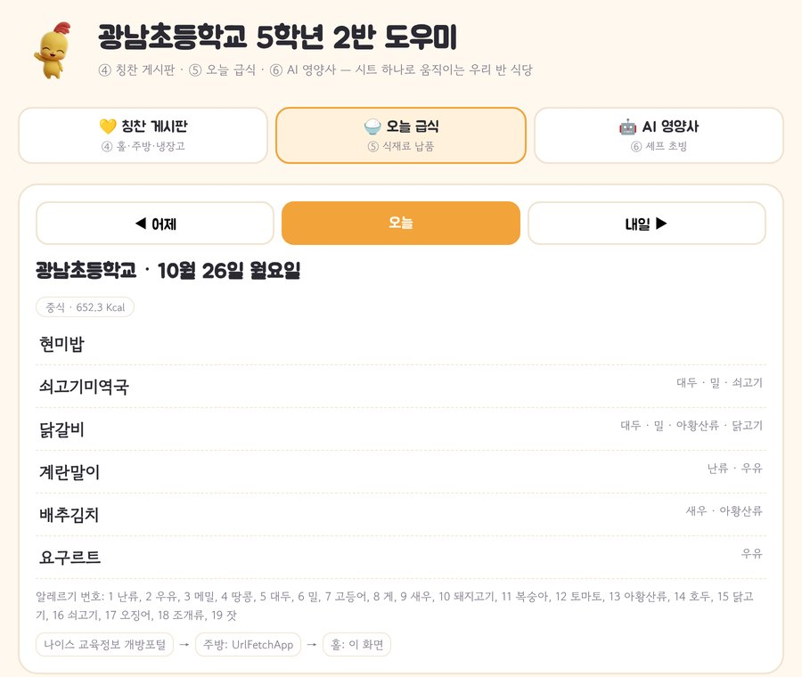
🏫 다른 학교라면 [설정] 탭의 교육청 코드 · 학교 코드만 바꾸면 돼요. 학교 코드 찾기(나이스) — 주소의 학교 이름만 바꾸세요.
키 없는 API로 HTML 앱 하나 만들기
제미나이 캔버스에 아래 프롬프트를 붙여 넣으면 「기상 관측소」가 만들어져요. 다 되면 내보내기 → 코드 다운로드로 파일을 받아 두세요 — 실습 4에서 진열장에 올립니다. (키트에도 완성본 weather.html이 들어 있어요.)
너는 초등학교 과학 선생님을 돕는 웹 개발자야. 5학년 과학 '날씨와 우리 생활' 단원에서 쓸 '광남초 기상 관측소' 웹앱을 HTML 파일 하나로 만들어줘. 성취기준: [6과06-01] 기상 요소를 조사하고, 날씨가 우리 생활에 주는 영향을 인식할 수 있다. [데이터] 키가 필요 없는 Open-Meteo API를 fetch로 호출 (광남초 좌표): https://api.open-meteo.com/v1/forecast?latitude=35.1532&longitude=129.1185¤t=temperature_2m,relative_humidity_2m,apparent_temperature,precipitation,weather_code,cloud_cover,surface_pressure,wind_speed_10m,wind_direction_10m&daily=temperature_2m_max,temperature_2m_min&timezone=Asia%2FSeoul [화면] ① 현재 기온을 아주 크게, 날씨 설명(맑음·흐림·비·눈)은 weather_code를 한글+이모지로 ② 습도 · 풍속과 풍향(16방위 한글) · 기압 · 구름량 · 강수량 · 오늘 최고/최저 — 6칸, 칸마다 초등 눈높이 한 줄 설명 ③ 기압이 1013hPa보다 높으면 "고기압", 낮으면 "저기압"이라고 판단해 주는 상자 (구름량과 연결해 설명) ④ "지금 값 기록하기" 버튼: 관측자 이름과 함께 표에 쌓이고 localStorage에 저장 (하루 세 번 기록해 비교), "기록 지우기" ⑤ 머리글에 안내 캐릭터 그림(character.png — 같은 폴더의 우리 반 캐릭터), 맨 아래 출처 표시(Open-Meteo) [조건] - 둥근 글씨(Jua), 하늘색 테마, 폰·태블릿에서 잘 보이게 - 서버 없이 파일 하나로, API 키 없음 - 다른 학교는 주소의 latitude(위도)·longitude(경도)만 바꾸면 되게 맨 위에 상수로 빼 줘
다른 납품 재료 — 세계 여행 환전소 (Frankfurter 환율 API)
너는 초등학교 수학 선생님을 돕는 웹 개발자야. 6학년 수학 '비와 비율' 단원(사회 '무역'과 연계)에서 쓸 '세계 여행 환전소' 웹앱을 HTML 파일 하나로 만들어줘. 성취기준: [6수02-03] 비율을 이해하고, 비율을 분수, 소수, 백분율로 나타낼 수 있다. [데이터] 키가 필요 없는 환율 API(Frankfurter)를 fetch로 호출: https://api.frankfurter.app/latest?from=KRW&to=USD,JPY,EUR,CNY,GBP,THB,AUD,PHP [화면] ① 나라 고르기 카드 8개(국기 이모지·나라·돈 이름), 누르면 선택 표시 ② 환전하기: 원(KRW)을 넣으면 선택한 나라 돈으로 바로 계산(크게 표시), "1 외화 = 몇 원 · 기준일" 표시, "반대로 계산" 버튼 ③ 표: 나라별로 1 외화 = ? 원, 1,000원 = ?, 10,000원 = ? (비율 비교) ④ 머리글에 안내 캐릭터 그림(character.png), 맨 아래 출처(Frankfurter·유럽중앙은행) [조건] - 둥근 글씨(Jua), 초록 테마, 폰·태블릿에서 잘 보이게, 숫자는 천 단위 쉼표 - 서버 없이 파일 하나로, API 키 없음
실습 3 · AI 셰프 모셔 오기생성형 API — 키 하나로 학생마다 다른 답을 즉석에서
급식 데이터(⑤)를 제미나이에게 넘기면, 아이 눈높이로 알레르기·영양 안내를 써 줍니다. 필요한 건 API 키 하나.
구글 AI 스튜디오에서 API 키 받기
- 개인 구글 계정으로 접속 → 약관 동의
- Create API key(API 키 만들기) → 프로젝트 고르기(없으면 새로 만들기)
- 나온 키(
AIza…로 시작) 복사
[설정] 탭 B6 칸에 붙여 넣기
시트 [설정] 탭의 제미나이 API 키(B6) 칸에 붙여 넣기 → 끝. 다시 배포할 필요 없어요. 주방이 실행될 때마다 이 칸을 읽습니다.
[🤖 AI 영양사] 탭 → 오늘 급식 분석하기
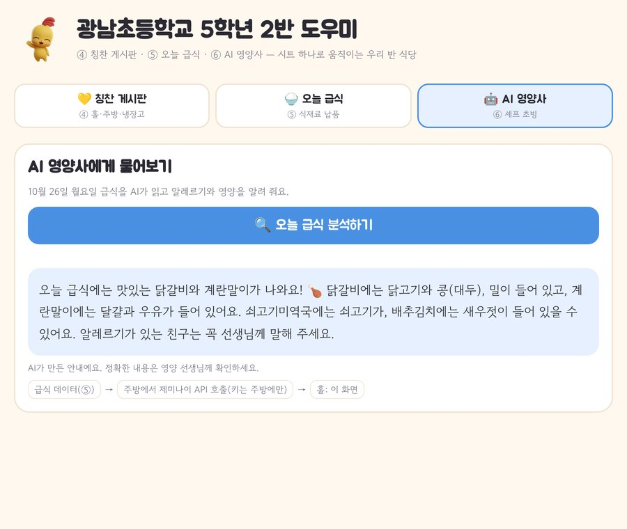
같은 날짜를 다시 누르면 [AI기록] 탭에 저장된 답을 보여 줘서 키를 아낍니다(무료 한도 보호). “잠시 후 다시”가 뜨면 1분 쉬었다가.
⚠ 학생 이름·건강 정보 같은 개인정보는 AI에게 보내지 않기. AI 안내는 참고용 — 알레르기는 꼭 영양 선생님과 확인.
더 해 보기 — 내 앱에 AI 셰프 붙이는 프롬프트 (급식 앱 + 알레르기 분석)
위에서 만든 급식 앱에 "알레르기 분석하기" 기능을 추가해 줘. 기존 기능은 그대로 두고, 바뀐 파일(Code.gs, index.html)의 전체 코드를 생략 없이 다시 보여 줘.
[제미나이 API 키 — 시트에서 읽기]
- Code.gs 맨 위에 SHEET_URL = "(여기에 내 스프레드시트 주소 붙여넣기)" 상수를 추가해.
- 제미나이 API 키는 코드에 쓰지 말고, SpreadsheetApp.openByUrl(SHEET_URL).getSheetByName("설정").getRange("A1").getValue()로 읽어 와. "설정" 탭이 없으면 만들고 A1에 "여기에 제미나이 API 키를 붙여넣으세요"라고 써 둬.
- A1이 비어 있거나 그 안내 문구 그대로면 분석하지 말고 화면에 "설정 탭 A1에 제미나이 API 키를 넣어 주세요"를 보여 줘.
- 키 값은 어떤 경우에도 화면(index.html)으로 보내지 마. 제미나이 호출은 Code.gs에서만.
[제미나이 호출 — Code.gs]
- 모델: gemini-2.5-flash. 주소: https://generativelanguage.googleapis.com/v1beta/models/gemini-2.5-flash:generateContent
- UrlFetchApp.fetch로 POST. 헤더에 "x-goog-api-key": 키, contentType "application/json", payload는 JSON.stringify({ contents: [{ parts: [{ text: 프롬프트 }] }] }). muteHttpExceptions: true를 넣고, 응답 코드가 200이 아니면 코드별로 안내: 400·403은 "API 키를 확인해 주세요", 429는 "요청이 많아요. 잠시 후 다시 눌러 주세요", 그 외는 "분석에 실패했어요. 잠시 후 다시 시도해 주세요".
- 결과 글은 JSON.parse(응답).candidates[0].content.parts[0].text에서 꺼내.
- 제미나이에게 보낼 프롬프트는 Code.gs에서 만들어: 그날 급식 메뉴 목록(알레르기 번호 포함)과 알레르기 번호표(1 난류 … 19 잣)를 함께 넣고, "초등학생에게 다정한 말투로, 오늘 급식에서 조심할 알레르기 식품을 번호가 아닌 식품 이름으로 바꿔 3~4문장으로 알려 줘. 어떤 메뉴에 무엇이 들어 있는지 말해 주고, 마지막 문장은 '알레르기가 있는 친구는 꼭 선생님께 말해 주세요'로 끝내. 의학적 판단이나 진단은 하지 마"라고 지시해.
[캐시 — 같은 날짜는 다시 부르지 않기]
- 분석 결과는 시트의 "분석" 탭에 날짜(yyyyMMdd) | 결과 글 | 분석 시각 순서로 저장해. 탭이 없으면 헤더와 함께 만들어.
- 분석 버튼을 눌렀을 때 그 날짜 결과가 "분석" 탭에 이미 있으면 제미나이를 부르지 말고 저장된 글을 보여 줘.
[화면]
- 급식 카드 아래에 [🔍 알레르기 분석하기] 버튼. 급식이 없는 날은 버튼을 숨겨.
- 누르면 버튼이 비활성화되고 "AI가 급식을 살펴보는 중…"이 보이다가, 결과가 오면 연한 파란색 카드에 결과 글을 보여 줘. 카드 아래 작은 글씨로 "AI가 만든 안내예요. 정확한 내용은 급식 담당 선생님께 확인하세요".
- 날짜를 바꾸면 이전 분석 카드는 지워지고 버튼이 다시 활성화돼.
- 저장된 결과를 보여 줄 때는 카드 위에 작게 "저장된 분석"이라고 표시.
[기술 조건]
- 기존 기술 조건(파일 2개, doGet, google.script.run, 순수 HTML/CSS/JS, 한국어) 그대로.
- 출력: 코드 블록 두 개(각 블록 첫 줄에 // 파일명 주석), 생략 없이 전체 코드. 코드 다음에 "설정 탭 A1에 키 넣기 → 새 버전으로 재배포" 순서를 3줄로.💡 셰프를 부를 수업 아이디어: 서술형 답에 맞춤 피드백 · 교과서 쪽수를 넣으면 수준별 퀴즈 · 글쓰기 이어 쓰기 짝꿍 — 모두 “키는 Code.gs에만”.
실습 4 · 깃허브로 간판 달기우리 반 앱 진열장 — 주소 하나로 모든 앱을 모아 두기
지금까지 만든 앱들이 여기저기 흩어져 있죠? 깃허브(GitHub)는 파일을 올려 두는 창고이고, 깃허브 페이지(Pages)는 그 창고에 간판을 달아 주소로 열어 주는 기능이에요. 무료입니다.
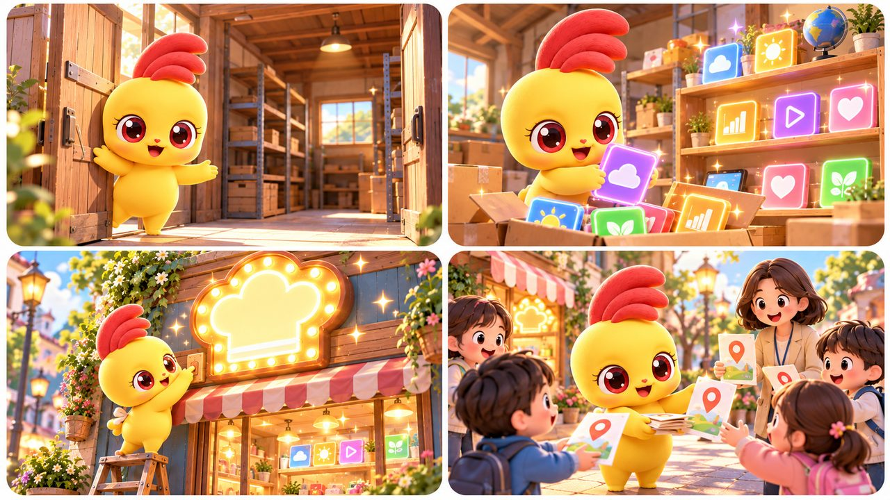
저장소 만들기
파일 올리기
main 고르고 Save
/myclass-apps/
📦 실습 키트 받기 (myclass-apps.zip) 👀 완성 예시 진열장
키트 받아서 압축 풀기
위의 [실습 키트 받기] → 다운로드 폴더의 myclass-apps.zip에서 마우스 오른쪽 → 압축 풀기(모두 압축 풀기). 폴더 안에 파일 5개가 보이면 OK.
| 파일 | 하는 일 |
|---|---|
| index.html | 진열장 첫 화면 — 맨 위 ✏️ 두 칸만 고쳐요 |
| banner.jpg · character.png | 맨 위 그림 · 우리 반 캐릭터 (같은 이름으로 올리면 바뀜) |
| weather.html | ⑤ 예시 앱 — 광남초 기상 관측소 |
| README.md | 저장소 안내문 |
창고 만들기 — New repository
오른쪽 위 ＋→New repository
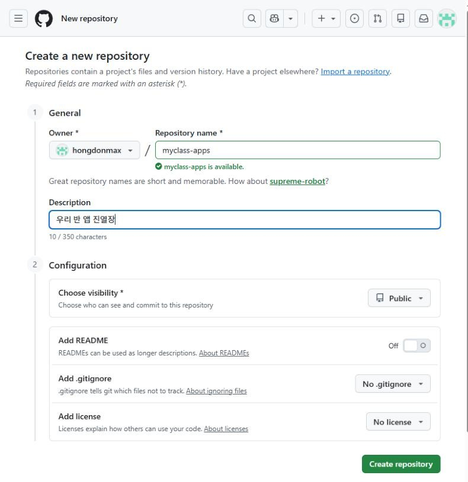
- Repository name:
myclass-apps(영어 소문자·숫자·하이픈) — 주소 끝이 됩니다 - Public 그대로 (무료 Pages는 공개 저장소에서만)
- 나머지는 건드리지 말고 Create repository
진열하기 — 파일 5개 끌어다 놓기
빈 창고 화면 가운데 파란 글씨 uploading an existing file 클릭 → 압축 푼 폴더 안의 파일 5개를 모두 선택(Ctrl+A)해서 끌어다 놓기 → 맨 아래 Commit changes.
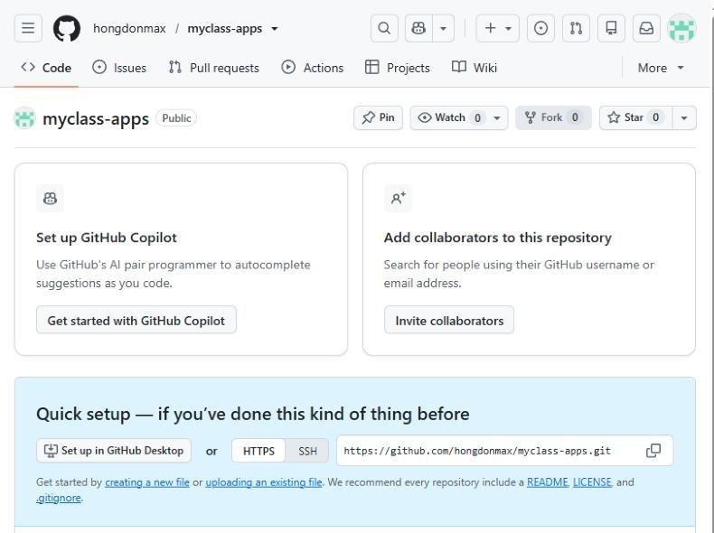
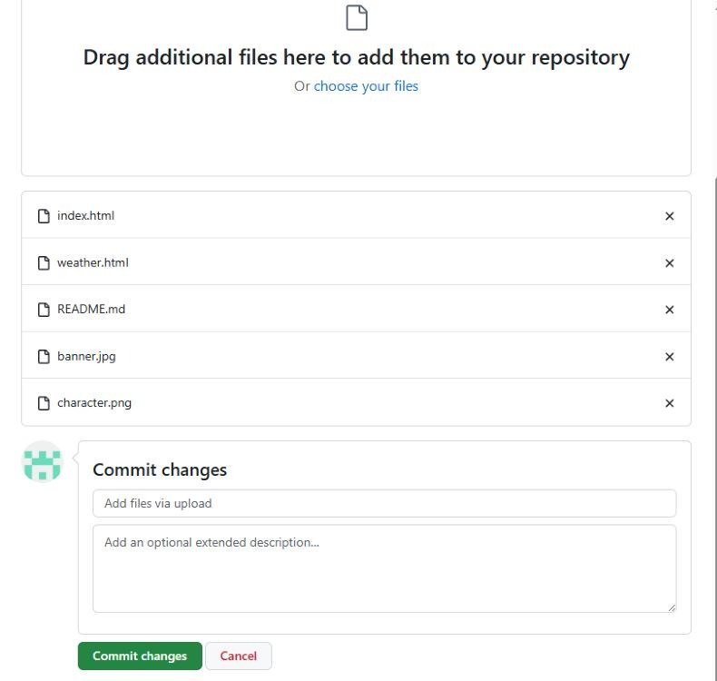
⚠ zip 파일 자체나 폴더째 올리면 사이트가 열리지 않아요. 꼭 폴더 안의 파일들을!
간판 켜기 — Settings → Pages
Settings→왼쪽 Pages→Branch: None ▾ → main→/(root)→Save
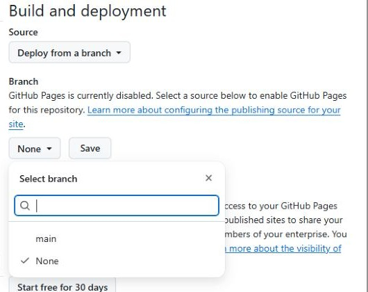
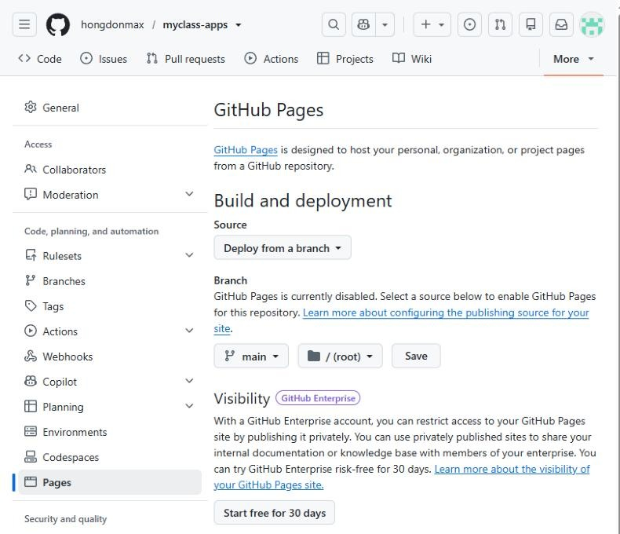
🔎 Settings가 안 보이면 창이 좁아서 More(…) 안에 숨어 있어요.
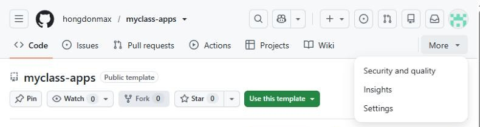
1~2분 뒤 내 주소 받기
Pages 화면을 새로고침하면 “Your site is live at …”이 나와요 → Visit site.
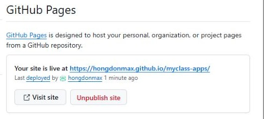
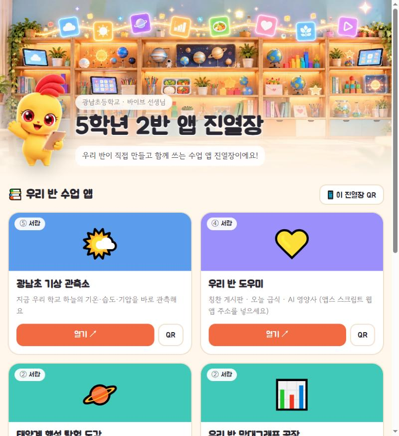
https://내아이디.github.io/myclass-apps/우리 반으로 꾸미기 — index.html ✏️
index.html 클릭→연필 ✏️→✏️ 두 칸 고치기→Commit changes… → Commit changes
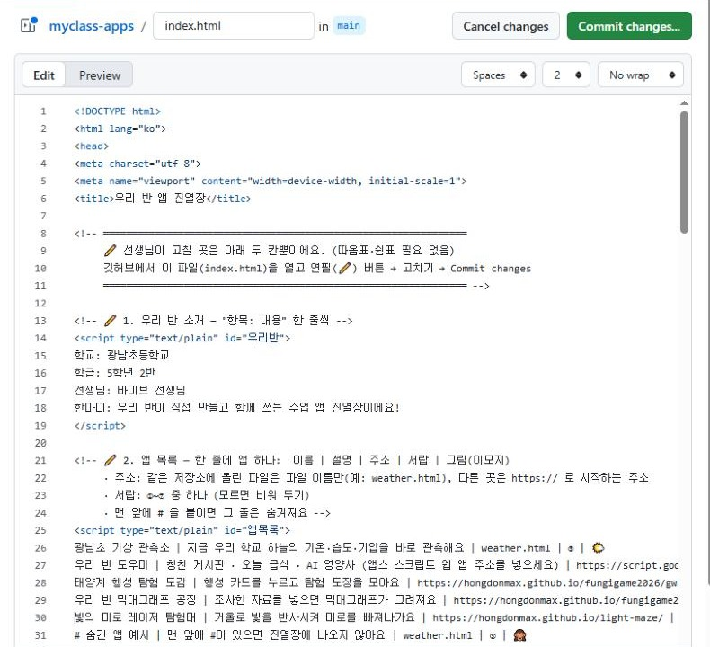
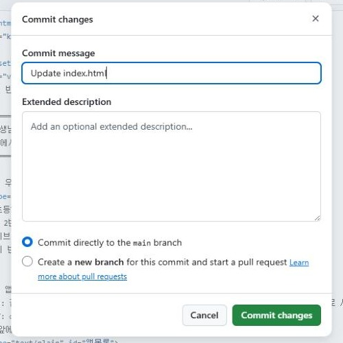
앱 한 줄 = 이름 | 한 줄 설명 | 주소 | 서랍 번호 | 이모지 — 예:
우리 반 도우미 | 칭찬 · 급식 · AI 영양사 | https://script.google.com/macros/s/내주소/exec | 4 | 💛🔗 실습 1에서 복사해 둔 웹 앱 주소를 “우리 반 도우미” 줄의 주소 칸에 붙여 넣으면 ④⑤⑥ 앱이 진열장에 걸립니다!
🙈 줄 맨 앞에 #을 붙이면 그 앱은 숨겨져요. 서랍 번호는 1~7 숫자로.
내가 만든 HTML 앱 올리기
- 저장소 첫 화면 → Add file → Upload files → 내
.html파일 끌어다 놓기 → Commit changes - 파일 이름은 영어 소문자로 미리 바꾸기 (예:
quiz.html,animals.html) - index.html 앱 목록에 한 줄:
동물 분류 탐정 | 특징으로 동물 나누기 | animals.html | 2 | 🐾
⚠ 내 앱 파일 이름이 index.html이면 진열장을 덮어써요! 꼭 다른 이름으로 바꿔서 올리기.
진열장에 올릴 앱을 새로 만드는 프롬프트 (캐릭터 포함)
너는 초등학교 선생님을 돕는 웹 개발자야. (학년·과목·단원) 수업에서 쓸 '(앱 이름)' 웹앱을 HTML 파일 하나로 만들어줘. 성취기준: (여기에 성취기준 붙여넣기) [화면] ① (학생이 처음 보는 화면 — 무엇을 고르거나 입력하는지) ② (누르면 무엇이 바뀌는지 — 정답 확인, 설명, 점수 등) ③ (마무리 — 다시 하기, 도장, 축하 문구 등) ④ 머리글에 안내 캐릭터 그림을 넣어 줘: <img src="character.png"> (같은 폴더에 있는 우리 반 캐릭터) [조건] - 깃허브 페이지(GitHub Pages)에 올릴 거야. 서버 없이 파일 하나로 열리게, 외부 라이브러리는 CDN만 써. - API 키·비밀번호·학생 실명은 코드에 넣지 마. 기록이 필요하면 브라우저 localStorage에만. - 둥근 글씨(Jua), 파스텔 색, 큰 버튼, 태블릿·휴대폰에서 잘 보이게. 모든 문구는 한국어. - 출력: 코드 블록 하나, 생략 없이 전체 코드. 코드 다음에 파일 이름을 영어 소문자로 하나 추천해 줘(예: quiz.html). index.html은 쓰지 마.
패들렛 갤러리에 내 진열장 주소 올리기
주소와 함께 “우리 반에서 이렇게 쓸래요” 한 줄. 다른 선생님 진열장도 열어 보고 댓글로 칭찬 💛
🐥 우리 반 캐릭터로 바꾸고 싶다면: 그림 파일 이름을 character.png로 바꿔 Upload files → 같은 이름이라 저절로 바뀝니다. 그리고 시트 [설정] 탭의 캐릭터 그림 주소에 https://내아이디.github.io/myclass-apps/character.png를 넣으면 도우미 앱에도 우리 반 캐릭터가!
시간이 부족하면 — 빠른 길 (Use this template)
예시 진열장을 그대로 복제해서 창고를 만드는 방법이에요. 파일 올리기 단계를 건너뛰고, 간판 켜기(4단계)부터 이어 가면 됩니다.
⚡ 템플릿으로 저장소 만들기 → Repository name myclass-apps → Public → Create repository
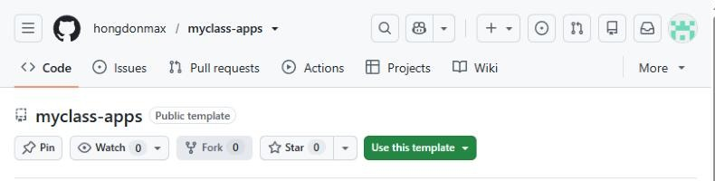
막히면 여기부터연수 중 가장 자주 나오는 문제와 해결
⑦주소를 열었더니 404 “There isn't a GitHub Pages site here”
① 1~2분 더 기다렸다가 새로고침 ② 저장소 첫 화면에 index.html이 바로 보이는지(폴더 안에 들어가 있으면 안 됨) ③ 파일 이름이 index.html.html, Index.html이 아닌지 ④ Settings → Pages에서 Save를 눌렀는지
⑦zip 파일을 그대로 올렸어요 / 폴더째 올렸어요
잘못 올린 파일을 눌러 오른쪽 위 … → Delete file → Commit changes로 지운 뒤, 압축을 푼 폴더 안의 파일들을 다시 올리세요.
⑦그림(캐릭터·배너)이 안 나와요
파일 이름이 코드와 글자 하나까지 같아야 해요. Character.PNG ≠ character.png(대소문자·확장자). 같은 창고 같은 위치에 있는지도 확인.
⑦Settings가 안 보여요 / Pages에 Branch 고르는 칸이 없어요
창이 좁으면 Settings는 More(…) 안에 있어요. Branch 칸이 없으면 저장소가 Private인 경우 → Settings → General 맨 아래 Change visibility → Public.
⑦고쳤는데 사이트가 그대로예요
깃허브가 다시 짓는 데 1~2분 걸려요. 기다린 뒤 Ctrl+F5(강력 새로고침). 저장소의 Actions 탭에서 초록 체크가 뜨면 반영 완료.
⑦진열장 위쪽에 빨간 “고칠 곳이 있어요” 상자가 떠요
앱 목록 한 줄에 |가 부족한 경우예요. 이름 | 설명 | 주소까지는 꼭 있어야 합니다. 안내된 줄을 고쳐 Commit.
④“Google에서 확인하지 않은 앱” 경고가 나와요
정상이에요. 내가 만든 앱이라 심사를 안 받았다는 뜻. 고급 → (안전하지 않음)으로 이동 → 허용. 학교 계정에서 아예 막히면 개인 gmail로 템플릿을 다시 복사하세요.
④웹 앱 주소를 학생 기기에서 열면 “권한 필요”가 나와요
배포할 때 액세스가 “나만”이었어요. 배포 → 배포 관리 → ✏️ → 액세스: 모든 사용자 → 버전: 새 버전 → 배포.
④웹 앱 주소를 잃어버렸어요
Apps Script → 배포 → 배포 관리에 웹 앱 URL이 있어요. 끝이 /exec인 주소가 학생용입니다(/dev는 나만 보는 시험용).
⑤급식이 “없어요”로 나와요
주말·공휴일·방학이거나 학교가 아직 식단을 올리지 않은 날이에요. ◀ 어제 · 내일 ▶을 눌러 보세요. 다른 학교라면 [설정] 탭의 교육청·학교 코드 확인.
⑥AI 영양사가 “키를 확인해 주세요”라고 해요
B6 칸 키 앞뒤에 빈칸·따옴표가 없는지, AIza로 시작하는 전체가 들어갔는지 확인. “요청이 많아요”는 무료 한도 — 1분 뒤 다시.
마무리 · 3일 안에 한 번 더망각곡선 — 사흘 안에 다시 열면 오래 남아요
내 진열장 주소를 북마크 바에 저장 (Ctrl+D)
우리 반 수업에서 앱 하나 써 보기
진열장 QR(📱 이 진열장 QR)을 칠판에 띄우면 학생들이 태블릿으로 바로 들어와요.
새 앱 한 줄 더 진열하기
제미나이로 만든 HTML → Upload files → 앱 목록 한 줄. 서랍 번호를 붙이며 “이건 몇 번 서랍?” 말해 보기.